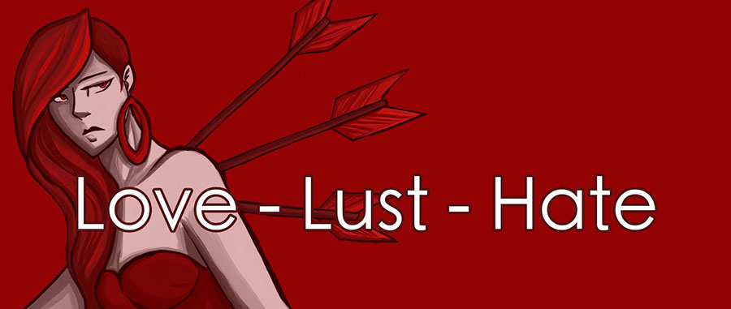

INTRODUCTIE
Een gedicht over de meest krachtige emoties in de wereld.

GESCHIEDENIS
Dit stuk met de heartmonitor is een stuk uit een van mijn Graphic Novels die ik aan het schrijven ben, dus er is nog geen tekst beschikbaar. De hart monitor in de achtergrond gaat lopen als de lezer op slide 1 is en gaat langzaam naar een flatline, als men door het verhaal scrollt. De HTML gaat gemaakt worden uit verschillende slides en wordt horizontaal gezet. Elke keer als men op een nieuwe slide komt, wordt de SVG gemanipuleerd en gaat meer richting de flatline.